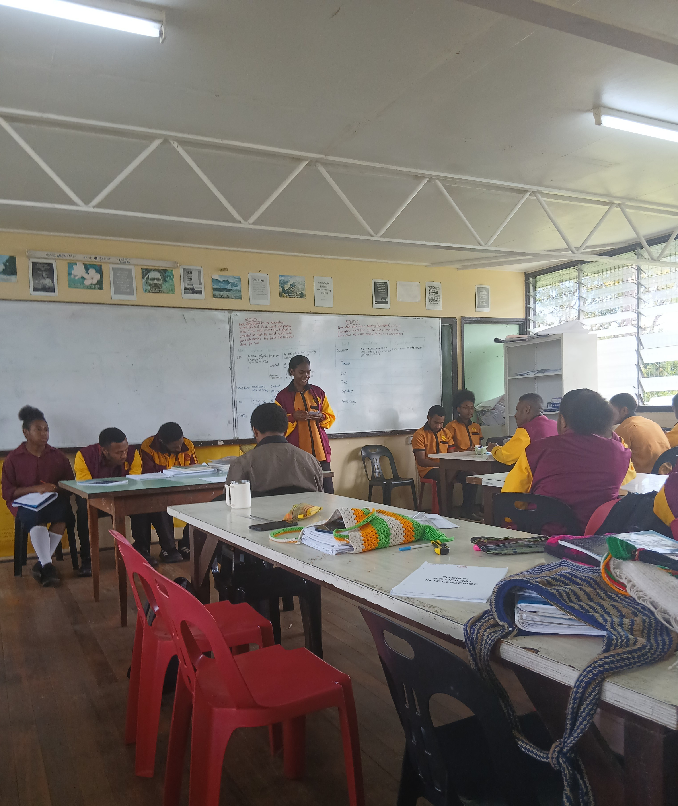
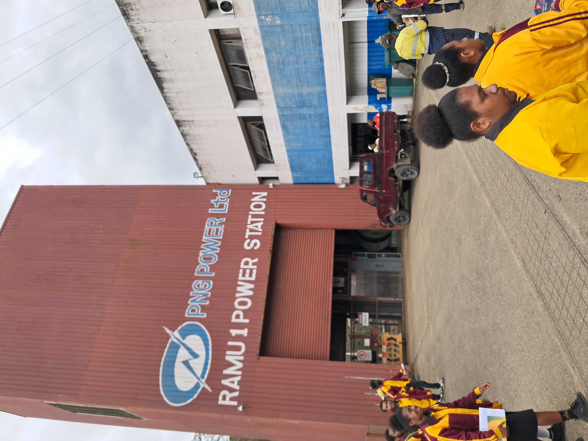
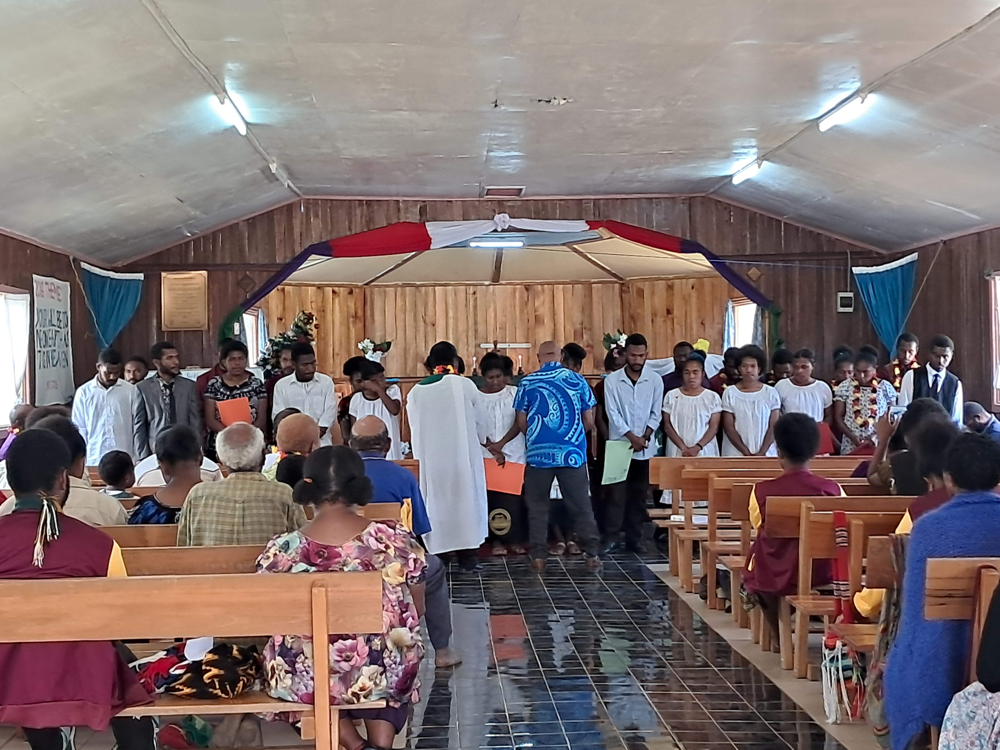
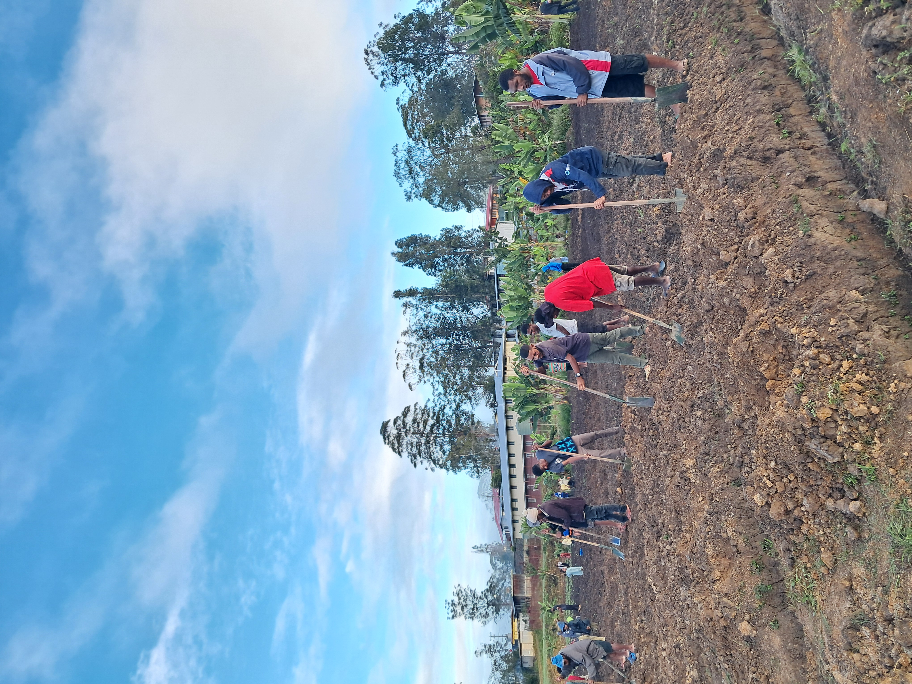
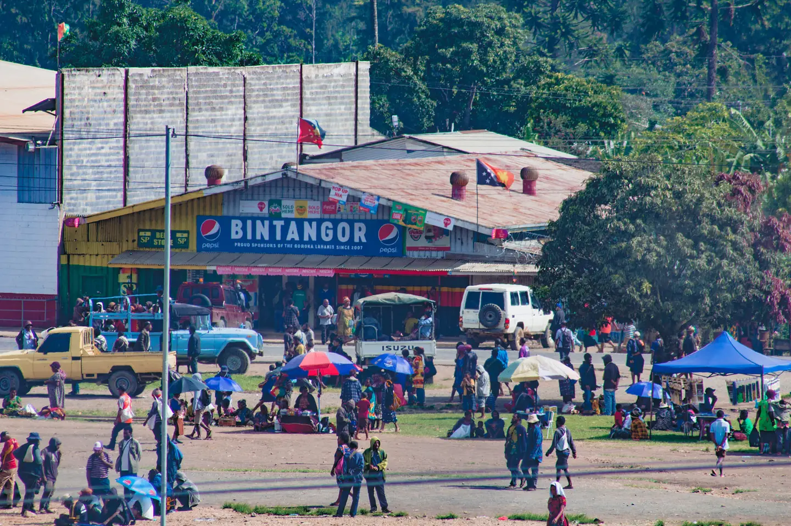

More About Us
Beyond learning in the classroom, Aiyura NSOE gives students a complete learning experience that helps them grow academically, socially, spiritually, and personally.
The school believes that education is not only about lessons and books, but also about the experiences students gain outside the classroom. Students take part in
activities such as sports, cultural programs, field trips, leadership activities, religious activities, school services, and other events. These activities help
students build confidence, discover their talents, work with others, and prepare for future challenges.

Students In Class
The image above shows students doing a class presentation. This activity helps students improve their confidence, communication skills, and ability to share ideas with others.

Field Trip
The picture above shows Aiyura NSOE STEM students on a field trip to Yonki. This gives students the opportunity to apply their classroom knowledge and gain practical experience in the real world.

Religious Activities
Students also take part in religious activities. This helps students strengthen their faith, develop good values, and build a sense of unity within the school community.

School Service
Students usually help in school service. The image above shows students ploughing the soil in preparation for planting cabbage. This teaches students teamwork and responsibility.

Kainantu Town
This is where students go for town trip. Students go for town trips twice or three times a term to buy their personal needs and supplies.

School Campus
The school has a huge campus. Some of the land within the school are not yet utilized and is covered in bush.